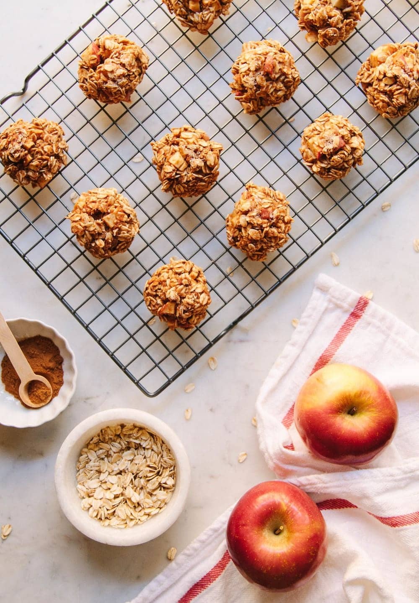
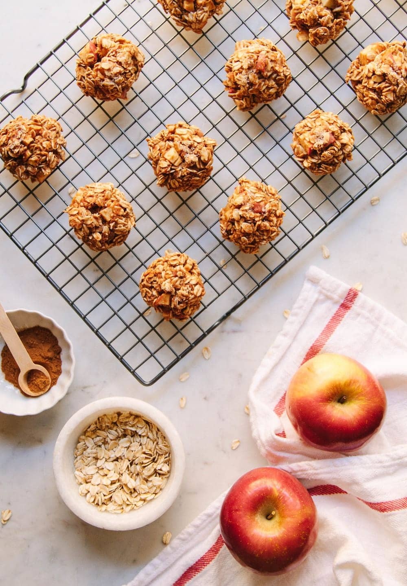

Health benefits
| Flavor | Health | Submit your ideas |
| Flavor | Health | Submit your ideas |
Many spices have a large amount of
health benefits, such as cinnamon and ginger.
The two spices I found have the widest range
of benefits with the least side effects are turmeric
and ashwagandha.
 Ginger chicken

Apple cinnamon
Ginger chicken

Apple cinnamon  Golden tonic
Golden tonic
 Chicken tikka
Chicken tikka